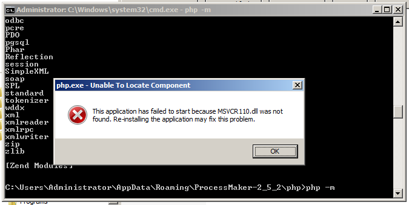
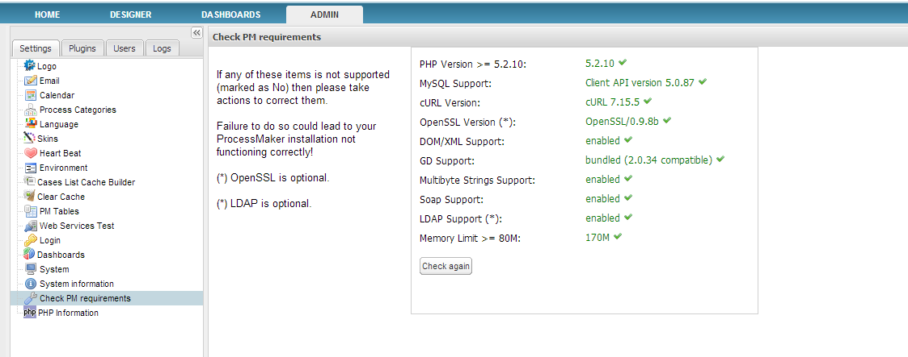

- Overview
- Configuring Apache
- Restarting Apache
- Compression to improve ProcessMaker performance
- Configuring ProcessMaker to use SSL/TLS
- Configuring PHP
- Checking the PHP modules
- Uploading large Input Documents
- Setting the Time Zone
- Managing Login Sessions in ProcessMaker
- More rows in an Output Document
- Importing large processes
- PHP Accelerators
- Insertion of quotation marks and backslashes
- Verification of files using the fileinfo extension
- Configuring MySQL
- Restarting MySQL
- Triggers in MySQL 5.5 and later
- Increasing the thread stack size
- Changing the database location, MySQL user or password
- Checking the ProcessMaker Requirements
Overview
After installing ProcessMaker, it may be necessary to modify the configuration of Apache, PHP and MySQL for certain situations which are listed on this page.
Configuring Apache
To configure Apache edit its httpd.conf file (or apache2.conf and ports.conf files if using Debian/Ubuntu). The other file to modify is the pmos.conf file which holds the VirtualHost definition for ProcessMaker. The location of these two files depends upon the operating system:
Red Hat/CentOS/Fedora:
- /etc/httpd/conf/httpd.conf
- /etc/httpd/conf.d/pmos.conf
Debian/Ubuntu/Mint:
- /etc/apache2/apache2.conf
- /etc/apache2/ports.conf
- /etc/apache2/sites-available/pmos.conf
Windows XP/Server 2000/2003:
- C:\Program Files\ProcessMaker-X_X_X\apache\conf\httpd.conf
- C:\Program Files\ProcessMaker-X_X_X\apache\conf\pmos.conf
Windows Vista and later:
- C:\Users\USERNAME\AppData\Roaming\ProcessMaker-X_X_X\apache\conf\httpd.conf
- C:\Users\USERNAME\AppData\Roaming\ProcessMaker-X_X_X\apache\conf\pmos.conf
Restarting Apache
After changing a setting in the httpd.conf or pmos.conf files, restart Apache for the new configuration to go into effect:
Red Hat/CentOS/Fedora:
Debian:
Ubuntu/Mint:
SuSE/OpenSUSE:
FreeBSD:
Windows XP/Server 2000/2003:
Open a DOS terminal and navigate to where Apache is installed and restart the service:
Windows Vista and later:
Open a DOS terminal and navigate to where Apache is installed and restart the service:
Compression to improve ProcessMaker performance
ProcessMaker performance can be improved by using ZIP compression when uploading/downloading pages. Compression should be supported by all modern web browsers. The compression uses Apache's deflate module, which should have been enabled when ProcessMaker was installed.
Note: The deflate module is enabled if the Apache configuration file httpd.conf contains a line like:
In Debian/Ubuntu/Mint, the deflate module can be enabled in Apache with the following command (issued as root or using sudo):
After adding the deflate module, restart apache.
To enable ZIP compression, edit the pmos.conf file. Add the following lines in the VirtualHost definition:
Then, restart Apache for the new settings to take effect.
Configuring ProcessMaker to use SSL/TLS
If your organization needs greater security to protect sensitive data being passed between web clients and the ProcessMaker server, it may be a good idea to set up a SSL or TLS connection which can be accessed through the https protocol (rather than the standard http protocol).
Follow the steps in the following tutorials to set up an SSL-secured web server in Red Hat/CentOS, Debian/Ubuntu and Windows. After creating the certificates that will be used by the ProcessMaker server, then configure ProcessMaker to use https in Apache.
Edit the file /etc/apache2/sites-available/pmos.conf and add the following lines in bold:
Then restart the Apache web server so the altered configuration will take effect. Now it possible to use ProcessMaker over SSL. Login to ProcessMaker by using the https protocol:
Configuring PHP
To change the configuration of PHP, edit its php.ini file with a plain text editor (such as Notepad in Windows and vim or nano in Linux/UNIX). The location of the php.ini file depends on your operating system:
- Red Hat/CentOS/Fedora:
- /etc/php.ini
- Debian/Ubuntu/Mint/SuSE/openSUSE:
- /etc/php5/apache2/php.ini
- In Debian/Ubuntu systems with multiple web servers:
- /etc/php5/cgi/php.ini
- FreeBSD:
- /usr/local/etc/php.ini
- Windows XP/Server 2000/2003:
- C:\Program Files\ProcessMaker-X_X_X\php\php.ini
- Windows Vista and later:
- C:\Users\USERNAME\AppData\Roaming\ProcessMaker-X_X_X\php\php.ini
After changing a setting in the php.ini file, restart Apache for the new PHP configuration to go into effect.
Checking the PHP modules
To check whether all the required PHP modules are installed, enter the following command in a terminal:
Linux/UNIX:
Windows:
Navigate to where PHP is installed. For example:
Then, issue the command:
If an error message about a missing MSVCR100.dll file appears when executing the command:

Then, install or update the Microsoft Visual C++ 2010 Redistributable Package for 32 bit or 64 bit.
ProcessMaker interface to check PHP modules
To check whether all the required PHP modules are loaded from inside ProcessMaker version 2.5.0 and later, log in as a user such as "admin" who has the PM_SETUPADVANCE permission in his/her role. Then go to ADMIN > Settings > PHP Information and check whether all the required modules are listed.

Uploading large Input Documents
If planning on uploading large Input Documents while running processes, the post_max_size and upload_max_filesize should be increased to more than the default 2MB. For instance, if planning on uploading files as large as 24MB, then:
After modifying these settings, restart Apache.
Setting the Time Zone
The time zone for ProcessMaker can be set under ADMIN > Settings > System in ProcessMaker 2.0.40 and later or by manually editing the time_zone setting in the env.ini file in version 2.0.29 or later. For previous versions, see Default Time Zone.
Nonetheless, it is also recommended to set the same time zone in the date.timezone setting in the php.ini file. See this list of available time zones. For example to set PHP to use Eastern Standard Time in the US, set date.timezone to "America/New_York":
In the US, use these time zones:
| US standard time zone | PHP time zone |
|---|---|
| Eastern | America/New_York |
| Central | America/Chicago |
| Mountain | America/Denver |
| Mountain no DST | America/Phoenix |
| Pacific | America/Los_Angeles |
| Alaska | America/Anchorage |
| Hawaii | America/Adak |
| Hawaii no DST | Pacific/Honolulu |
After changing the time zone, restart Apache for the changes to take effect.
Managing Login Sessions in ProcessMaker
By default, ProcessMaker logs out a user after 24 minutes of inactivity. This time can be changed by setting the value of session.gc_maxlifetime in php.ini.
In addition, the session.cache_expire sets how long data in the cache is stored and session.cache_limiter sets whether data is cached by the web browser and proxies.
After modifying these settings, restart Apache.
More rows in an Output Document
In PHP 5.3.9 and later, the max_input_vars setting limits the maximum number of posted variables. By default, max_input_vars is set to 1000, which will generate approximately 300 rows in a grid in an Output Document. If this value is too small, then grids in Output Documents may be truncated.
To generate more rows, increase this setting in the php.ini configuration file:
Then, restart Apache for the new setting to take effect.
- Note: If using the Suhosin security patch, then change the following settings in the suhosin.ini configuration file.
In Red Hat/CentOS/Fedora:
- /etc/php5/apache2/conf.d/suhosin.ini
In Debian/Ubuntu/Mint:
- /etc/php5/conf.d/suhosin.ini
Configure the file as follows:
Importing large processes
To import large processes it may be necessary to increase the memory_limit to 256M in php.ini:
After modifying this setting, restart Apache.
PHP Accelerators
Installing an opcode cache manager, such as Zend, Alternative PHP Cache (APC), XCache, eAccelerator or ionCube EncoderZend, can double the speed of ProcessMaker and decrease the load on your server's CPU. Of the available PHP accelerators, ProcessMaker recommends APC, because it is maintained by PHP developers, but APC, Xcache and eAccelerator all have good performance.
Make sure to restart Apache after installing an opcode cache manager and only use one opcode cache manager at a time.
Installing APC
Debian/Ubuntu/Mint:
APC can be installed from your distribution's repository:
Red Hat/CentOS/Fedora:
- See this tutorial to install APC in Red Hat/CentOS/Fedora.
Windows:
- See this tutorial to install APC in Windows. Make sure to download the version of APC compiled for your version of PHP.
Insertion of quotation marks and backslashes
To prevent single quotation marks and backslashes from being automatically inserted in Output Documents, turn off magic quotes in php.ini.
After modifying these settings, restart Apache.
Verification of files using the fileinfo extension
Version 2.8.0 and later uses the fileinfo extension in PHP to verify the extension of uploaded files and ensure that the file extension matches the contents of the file. The fileinfo extension is included by default in PHP 5.3.0 and later, but it may need to be enabled. Use the php -m in the command line or go to ADMIN > Settings > System Information in ProcessMaker to check whether the fileinfo extension is enabled.
Windows:
Enable the fileinfo extension by editing the php.ini file with a plain text editor and adding or uncommenting the following line:
Then, restart Apache. Then verify that the extension is enabled.
Linux/UNIX:
In most Linux/UNIX distributions, the fileinfo extension is enabled by default in PHP. If not add the following line to the php.ini file:
Then restart Apache to use the fileinfo extension.
Configuring MySQL
MySQL can be configured by editing its my.cnf file (which is named my.ini in Windows). Its location depends on the operating system:
Red Hat/CentOS/Fedora/SuSE/OpenSUSE:
- /etc/my.cnf
Debian/Ubuntu/Mint:
- /etc/mysql/my.cnf
Windows XP/Server 2003:
- C:\Program Files\ProcessMaker-X_X_X\mysql\my.ini
Windows Vista and later:
- C:\Users\USERNAME\AppData\Roaming\ProcessMaker-X_X_X\mysql\my.ini
Restarting MySQL
After modifying the my.cnf file, restart MySQL:
Red Hat/CentOS/Fedora:
Debian/Ubuntu/Mint/SuSE/OpenSUSE:
Windows XP/Server 2000/2003:
Open a DOS terminal and navigate to where MySQL is installed and restart the service:
Windows Vista and later:
Open a DOS terminal and navigate to where MySQL is installed and restart the service:
Triggers in MySQL 5.5 and later
To avoid problems running triggers in MySQL 5.5 and later, edit the my.cnf configuration file and set the binlog_format to log by rows, rather an statements:
For more information, see the MySQL documentation. Then, restart MySQL for the new setting to take effect.
Increasing the thread stack size
According to the Mysql manual, the default thread stack is 128K, which sometimes is not enough to execute long queries, e.g., long joins. If the thread stack is too small, the following Thread stack overrun (MySQL ERROR 1436) may occur:
If this problem is encountered, edit the MySql configuration file my.cnf and increase the size of the thread_stack setting in the following line:
Then, restart MySQL for the change to take effect.
Changing the database location, MySQL user or password
It is necessary to update the encrypted information in the paths_installed.php file after:
- changing the location of the ProcessMaker databases,
- changing the MySQL user with superglobal privileges to create databases for new workspaces (which is usually the "root" user), or
- changing the password of that MySQL user.
First make the changes in MySQL, then update the information in ProcessMaker. See: Changing the MySQL.
Checking the ProcessMaker Requirements
Inside the ADMIN tab, an option to check the ProcessMaker requirements was added in versions 2.5 and later. This option checks whether all the requirements are correctly installed and lists which versions are installed.
Login to ProcessMaker as a user with the PROCESSMAKER_ADMIN role. Then go to ADMIN > Settings > Check PM Requirements:

After installing any missing requirements, click on the Check again button to verify whether everything is properly installed.